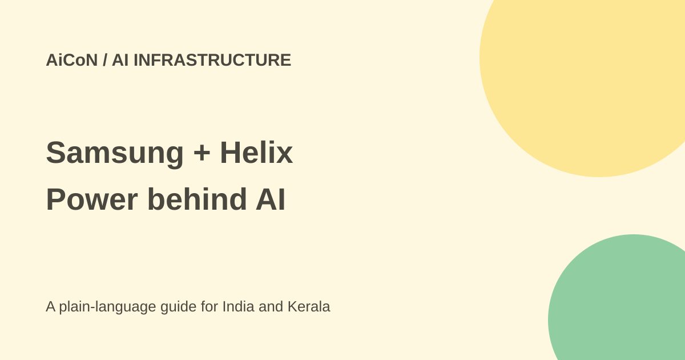

Samsung and Helix: what the $1 billion AI investment means
Samsung and five other group companies announced a combined investment in Helix. This is infrastructure news, not a free AI app or a public offer to invest.

What did Samsung announce?
On 29 September 2026, Samsung's official newsroom said six affiliates are investing a combined USD 1 billion in Helix Digital Infrastructure. Samsung Electronics contributes USD 500 million; the other five provide the remainder together. The announcement does not give each of those five a separate amount.
The participants are Samsung Electronics, Samsung C&T, Samsung SDS, Samsung SDI, Samsung Life Insurance and Samsung Fire & Marine Insurance. At the approximate ₹96.43-per-dollar reference used in this archive, the combined commitment is about ₹9,643 crore. That is a comparison, not a transaction value fixed in rupees.
What is Helix?
Samsung describes Helix as an AI infrastructure company established by KKR in June 2026. It is led by Adam Selipsky, the former Amazon Web Services chief executive. Other founding investors named in the announcement are KKR, the Kuwait Investment Authority, NVIDIA and Vistra.
Its planned chain includes hyperscale data-centre development and operation, power generation, transmission and distribution infrastructure, and fibre-optic networks. A hyperscale data centre is a very large computing facility. Fibre carries data; generation and grids supply the electricity needed to keep computing equipment running.
Why power matters as much as chips
Samsung's announcement calls power availability a major bottleneck. AI computing needs servers, cooling, a reliable grid connection and backup systems. Owning or arranging these pieces together can help a developer plan large projects. It does not remove planning, construction, reliability or environmental risks.
The affiliates bring different capabilities. Samsung points to chips and cooling at Electronics, construction at C&T, data-centre operation at SDS, and backup-power batteries at SDI. These are stated capabilities and future business opportunities, not proof that every joint project has already been built.
Is this something readers can use for free?
No consumer product or free tier is announced here. There is no download step, subscription price or retail investment application in this news release. The commitment is about companies funding infrastructure. Do not treat a link using the Helix name as a chance to deposit money or receive guaranteed returns.
How to read the news sensibly
- Start with the dated Samsung announcement rather than an undated summary.
- Separate the total group commitment from Electronics' individual contribution.
- Check later project announcements for locations, timelines and operating capacity.
- Distinguish planned investment from facilities that have started serving customers.
- For a business purchase, use the actual provider's contract and service terms, not this announcement.
What does it mean for India and Kerala?
The release describes a global build-out. It does not announce a Kerala facility, Indian consumer price or local job application. It can help students understand why AI growth creates demand for construction, electrical systems, cooling and networks as well as software. A specific local opportunity needs a separate, verified announcement.
What changed since the original AiCoN post?
The original post used an approximate ₹8,850 crore headline. This guide keeps the official USD amount and labels its different INR reference clearly. It adds the split between Electronics and the other affiliates and separates a commitment from an operating product.
Frequently asked questions
Is the full billion from Samsung Electronics?
No. Its announced share is USD 500 million.
Can I sign up for a free Helix chatbot?
This announcement offers none.
Does it guarantee investment returns?
No. It is company infrastructure news, not personal financial advice.
Sources: Samsung official announcement. Checked 7 October 2026.